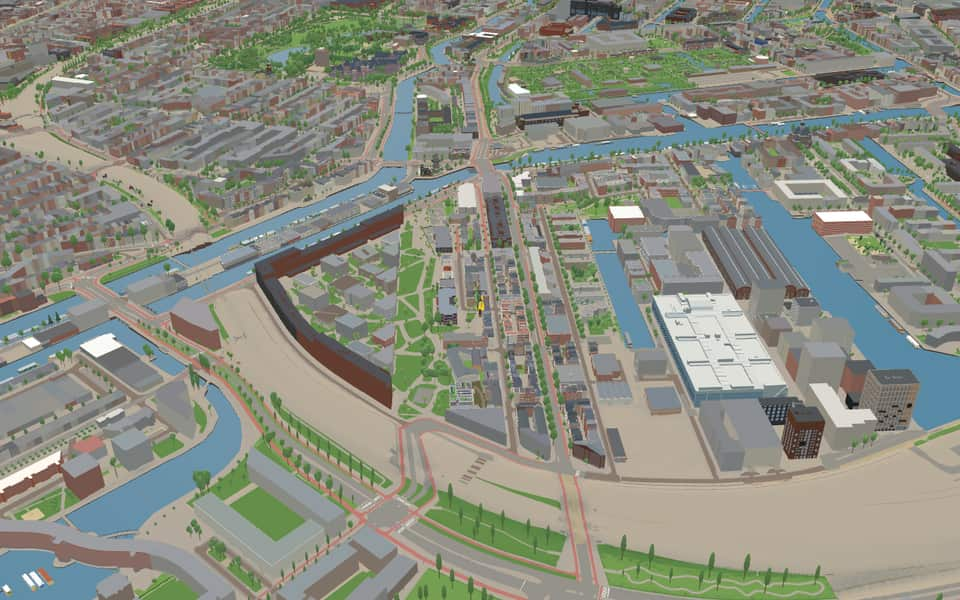
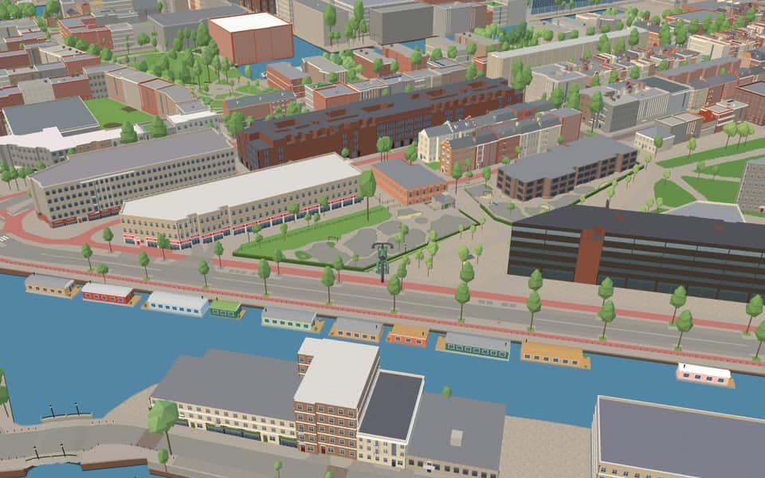
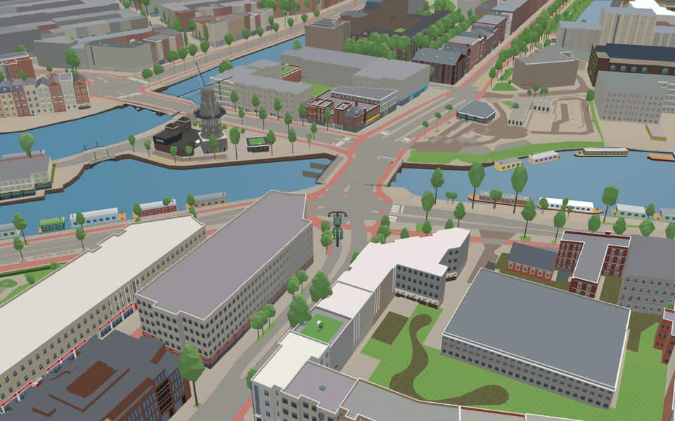
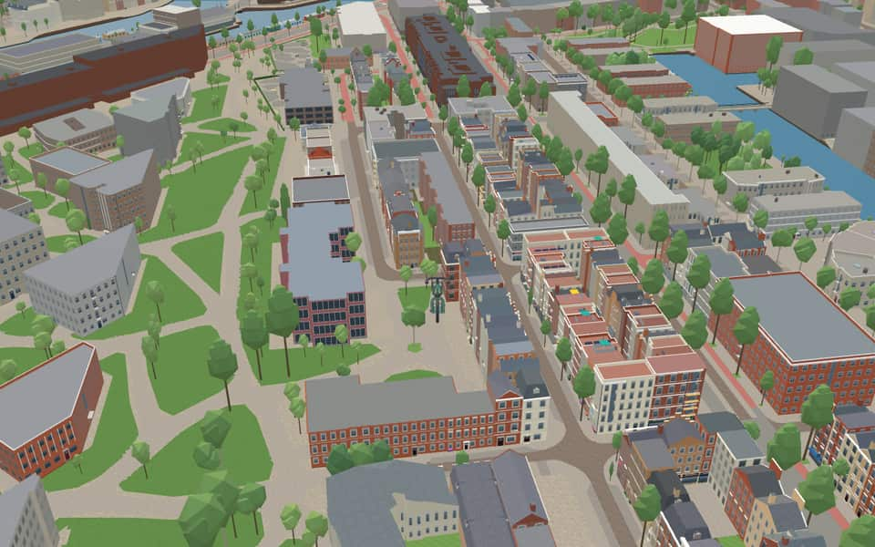

Neighbourhood in Oostelijke Eilanden
Czaar Peterbuurt
Czaar Peterbuurt is a neighborhood of Amsterdam, Netherlands. en.wikipedia.org
The name. Named after Tsar Peter the Great. nl.wikipedia.org
Ride Czaar Peterbuurt1 modelled building · 12 facts · 20 name stories


In the game
Frames from a ride through Czaar Peterbuurt.




6 more photos of Czaar Peterbuurt

_-_3.jpg){kind=link}

.jpg){kind=link}


%2C_Amsterdam_(Q30140611)_-_1.jpg){kind=link}


_(Q101623444)_-_4.jpg){kind=link}
Built here
Buildings modelled one by one for the ride.
Blankenstraat 15
Did you know
Trivia the ride can show you here.
- The film Ciske de Rat was shot in the Czaar Peterbuurt in 1983. Wikipedia (translated from Dutch)
- The first series of the TV show Het Blok was filmed in the Czaar Peterstraat. Wikipedia (translated from Dutch)
- Part of it was reclaimed in 1663 for the VOC's ropewalks, where the company's ropes were made. Wikipedia (translated from Dutch)
- Its northern tip was the Keerweer, the point where ships turned. Wikipedia (translated from Dutch)
- The Dageraadsbrug is named after the De Dageraad shipyard that lay here on the Nieuwe Vaart. Wikipedia (translated from Dutch)
- DageraadsbrugDageraadsbrug takes its name from the nearby shipyard De Dageraad. nl.wikipedia.org
- DageraadsbrugPiet Kramer designed this Amsterdam School structure in 1931 before construction delays. nl.wikipedia.org
- DageraadsbrugTram line 7 crosses the Dageraadsbrug along with regular traffic. nl.wikipedia.org
- Nieuwe VaartResidents could isolate the island by lifting the Kattenburger bridge during the 1787 Bijltjesoproer riot. en.wikipedia.org
- Nieuwe VaartIn 1917, stone-throwing women followed a potato barge through the canal before police fired into the air. en.wikipedia.org
- Nieuwe VaartThe canal was dug in 1649 to fix silting problems caused by the island crossing much of the IJ. en.wikipedia.org
- Nieuwe VaartA houseboat association formed in 2011 after city plans threatened to remove most berths from the western section. en.wikipedia.org
Names on the map
Where the canal, bridge and street names come from.
Canals and water
- Nieuwe VaartNamed after the Nieuwe Vaart, dug around 1650 to link the IJ and the Oosterdok by the shortest possible route with the mouth of the IJ at Zeeburg.
Bridges
- DageraadsbrugThis fixed bridge is named after the former shipyard 'De Dageraad' (the dawn) nearby.Bridge 353: a steel bridge for road traffic, dated 1935 in the city's bridge register.
Streets
- BlankenstraatJan Blanken (1755-1838), hydraulic engineer and builder of fortifications. The Noordhollandsch Kanaal was dug to his design between 1818 and 1824.
- ConradstraatFrederik Willem Conrad (1800-1876), hydraulic engineer. He designed several hydraulic works in the Netherlands and the plans for cutting through the Isthmus of Suez, as well as the first railway station at the Haarlemmerpoort (1839).
- Cornelis VermuydenstraatHydraulic engineer (1590-1677). In 1619 he took his knowledge of Zeeland dike building to England, where he was involved in draining the great peat district of The Fens in East Anglia. He was raised to the English nobility in 1629, but was later imprisoned for debts from failed projects. Some of his plans were carried out after his death.
- CruquiuskadeNicolaas Samuel Cruquius (or Kruik) (1678-1754), hydraulic engineer, who drew up a plan to drain the Haarlemmermeer.
- CruquiusstraatNicolaas Samuel Cruquius (or Kruik) (1678-1754), hydraulic engineer, who drew up a plan to drain the Haarlemmermeer.
- Czaar PeterstraatPeter I, Emperor of Russia (1672-1725), who spent about half a year in the Netherlands in 1697, first in Amsterdam and then in Zaandam. He worked at the East India Company's shipyard to learn shipbuilding.
- DageraadsbrugThis fixed bridge is named after the former shipyard 'De Dageraad' (the dawn) nearby.
- Eerste CoehoornstraatMenno Baron van Coehoorn (1641-1704), fortress builder, engineer-general of fortifications.
- Eerste LeeghwaterstraatJan Adriaanszoon Leeghwater (1575-1650), hydraulic engineer. As overseer and millwright he worked on many land reclamations, including the Beemster. He drew up the first plan to drain the Haarlemmermeer.
- Frans de WollantstraatAn eighteenth-century Dutch military engineer who made his name in Russia under Catherine the Great as a designer of hydraulic works and builder of the city of Odessa.
- FunenparkThe strip of land on which the Czaar Peterstraat, among others, was laid out came inside the city with the expansion of 1658 and was afterwards called the Funen. The name recalled the Danish island of Funen, where Admiral De Ruyter won a naval battle against the Swedes in 1659.
- Johannis de RijkestraatHydraulic engineer (1842-1913). In 1865 he was overseer in the building of the Oranjesluizen at Schellingwoude, and in 1872 he went to Japan, where in government service he improved harbours and major waterworks. From 1891 to 1903 he was a kind of state secretary at the Japanese Ministry of Transport and Water Management. He was knighted for his work in both the Netherlands and Japan.
6 more streets with a story
- KeerwalA place where you can go no further and have to turn back (keren). The buildings on the Keerwal screen the homes by the railway in the Funenpark.
- KraijenhoffstraatCornelis R.Th. Baron van Kraijenhoff (1758-1840), hydraulic engineer and Minister of War under King Louis Napoleon, who strengthened the fortifications around the city in 1815.
- LijndenstraatFrederik Baron van Lijnden van Hemmen (1761-1845), fortification and hydraulic engineer and member of parliament, who wrote a treatise (in 1821) on draining the Haarlemmermeer.
- OostenburgergrachtOostenburg was the easternmost of the three islands (with Kattenburg and Wittenburg) brought within the city in the expansion of 1658. Laying out the streets and building began in 1664. At first there were three streets from the canal, named after their position Oostenburgervoorstraat, -middenstraat and -achterstraat (front, middle and back streets). In the first half of the twentieth century the Oostenburgerachterstraat was closed to public traffic for the expansion of the Werkspoor company, and it was abolished in 1957. The Oostenburgermiddenstraat was abolished in 1985; the Compagniestraat now runs there.
- Tweede CoehoornstraatMenno Baron van Coehoorn (1641-1704), fortress builder and engineer-general of fortifications.
- Tweede LeeghwaterstraatJan Adriaanszoon Leeghwater (1575-1650), hydraulic engineer. As overseer and millwright he worked on many land reclamations, including the Beemster. He drew up the first plan to drain the Haarlemmermeer.